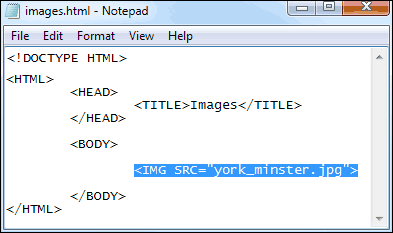

More on Inserting Images
In the previous section, you learnt about relative file referencing. In this section, we'll continue the lesson with some practical work.
Navigate to where on your hard drive you saved your HTML pages. For us, this was a folder called HTML. Inside of the HTML folder, create two more. Call one of the folders images and the other pages. If you're using a Windows computer, your Explorer window will then look like this (Windows 7):
Double click your template text file and add the following HTML image code:

Click File > Save As and save your template as a HTML file. But save it in your new pages folder, and call it images.html. Don't forget to change the Save as type box to All Files, if you're using Windows:
Once you have saved your template as a HTML web page, double click it to open it up in your browser. You should see this, if you are using Firefox:
If you are using Internet Explorer, however, you should see this:
In both cases, the image has not displayed. Firefox displays a broken file icon, and Internet Explorer displays a red X icon. The reason is that the browser can't find the file. So if you see either of those icons in future, just remember that the browser is telling you "Image File Not Found".
To solve this problem, we have some files for you. The file you need is in the extra_files folder that came with this course. (If you haven't got the extra files yet, the download location is here, under the heading Web Design - New Course : Download the Extra Files needed for this course (You don't need the downloads for the old course.)
Double click the extra_files folder, and then double click the york_images folder. Copy the york_minster.jpg file and paste it into your HTML/pages folder. Your pages folder will then look like this:
The image and the web page are in the same folder, the pages folder. Notice the file size of the image - 747 kilobytes. Could be a bit big on the internet, and we'd want to look into this.
Once you've copied the image over, refresh your HTML page in your browser. You should see the image appear:
If you don't see an image, but still have the "Image File Not Found" icon, make sure the SRC part of the HTML is correct:
SRC="york_minster.jpg"
Note the lowercase spelling, and the two double quote marks. A common error is to spell SRC as SCR. Make sure, too, that the image and the web page are in the same folder.
Once you get the image displayed in the browser, create another folder inside the pages folder. Call this one york_images. Your explorer window should then look like this:
Now move the york_minster.jpg image to the york_images folder. Your explorer window will then look like this:
Reload your web page in your browser. You should see the "Image Not Found" icon again.
Go back to your HTML code and change the IMG line to this:
<IMG SRC="york_images/york_minster.jpg">
So we've added the folder name, then a forward slash. This denotes a folder in the same directory as the HTML page. After the forward slash, we have the image name. What we're saying here is, "In the same folder as the images.html page, look for a folder called york_images. In this folder there is an image called york_minster.jpg".
Save your work and reload the images.html web page in your browser. You should see the image reappear.
Advanced file referencing
Previously, you created an images folder and a pages folder. This:
For neatness sake, this is a good idea: you can have most of your html pages in the pages folder, and all your pictures in the images folder. (We say most of your html pages because there is an exception called the index.html page. You'll learn about this a bit later.)
One difficulty about this approach is that file referencing becomes a lot harder. Suppose we moved the york_images folder inside of the images folder. If we did, the code we wrote before would no longer work. This line:
<IMG SRC="york_images/york_minster.jpg">
That's because there would no longer be a folder called york_images in the same location as the images.html file. The image is now one folder up from the pages folder. The code would therefore be this:
<IMG SRC="../images/york_images/york_minster.jpg">
After SRC we now have two dots and a forward slash. Two dots and a forward slash mean "go up one folder from where you are". (Remember, this is all relative to the images.html page, where the code is.) The browser will then look for a folder called images. It will search this folder for one called york_images. Then it will look for the image specified.
Don't worry if all that is not too clear: we'll keep images and image folders together, just for simplicity's sake. But if you're still not sure about file referencing, we've produced a video for you here: File Referencing Video.
In the next lesson, you'll learn about Image Attributes.